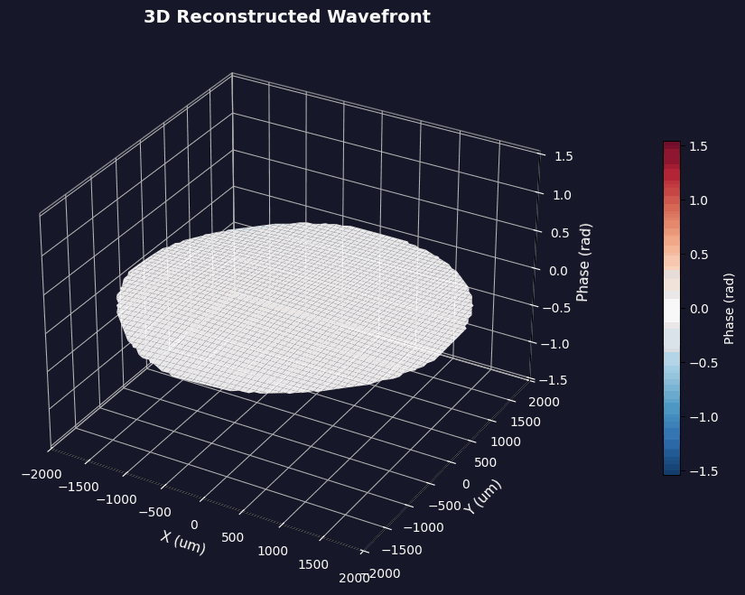

RIPRA
Adaptive Optics Pipeline
REAL-TIME WAVEFRONT RECONSTRUCTION - TURBULENCE CHARACTERIZATION - DM MAPPING
SH-WFS Time-Series Input
8x8
Lenslets
648x492
Camera (px)
0
Frame
Real-Time Processing Pipeline
iterative centroid estimation
iterative centroid estimation
zonal reconstruction
Latency: <1ms/frame
Throughput: 500 fps
Stability Metric: σ < 0.05λ
Latency: <1ms/frame
Throughput: 500 fps
Stability Metric: σ < 0.05λ
Reconstructed Wavefront
